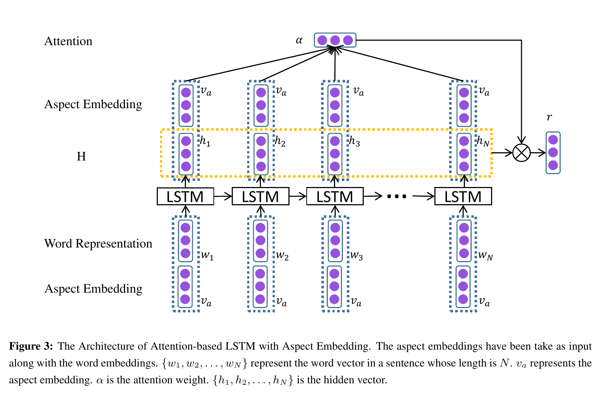

Attention-based LSTM for Aspect-level Sentiment Classification
利用Aspect信息和Attention机制，解决Aspect-level的细粒度情感分析问题。
主要贡献
- 提出了基于注意力机制的LSTM模型。当关注不同的aspect时，模型可以关注句子中的不同部分。
- 设计了两种方式将aspect信息输入在模型中：
- 对词进行向量表示时，将aspect embeddings附加到输入向量后面。
- 计算注意力权重时，将aspect embeddings和句子的隐藏层输出做concat，一起计算注意力权重。
模型设计
模型结构图

输入向量
-
input embeddings：加载glove.6B.300.txt向量
-
aspect embeddings：aspect中字向量的加权平均
-
将input embeddings和aspect embeddings进行拼接，作为LSTM的输入
$$
\begin{bmatrix}
x_t \
x_{aspect}
\end{bmatrix}
$$
Attention层
-
将LSTM输出向量与aspect向量进行拼接，并计算softmax，得到LSTM输出层的Attention系数
$$
M = tanh
\begin{bmatrix}
W_hH \
W_vv_a \otimes e_N
\end{bmatrix}
$$$$
\alpha=softmax(w^TM)
$$ -
将隐层向量与各相关系数进行点乘，得到attention向量
$$
r = H \alpha^{T}
$$
任务层
-
将attention向量和隐层输出向量相加
$$
h^*=tanh(W_pr+W_xh_N)
$$ -
最后接一个Dense层和一个softmax进行任务判别
$$
y = softmax(W_xh^*+b_s)
$$